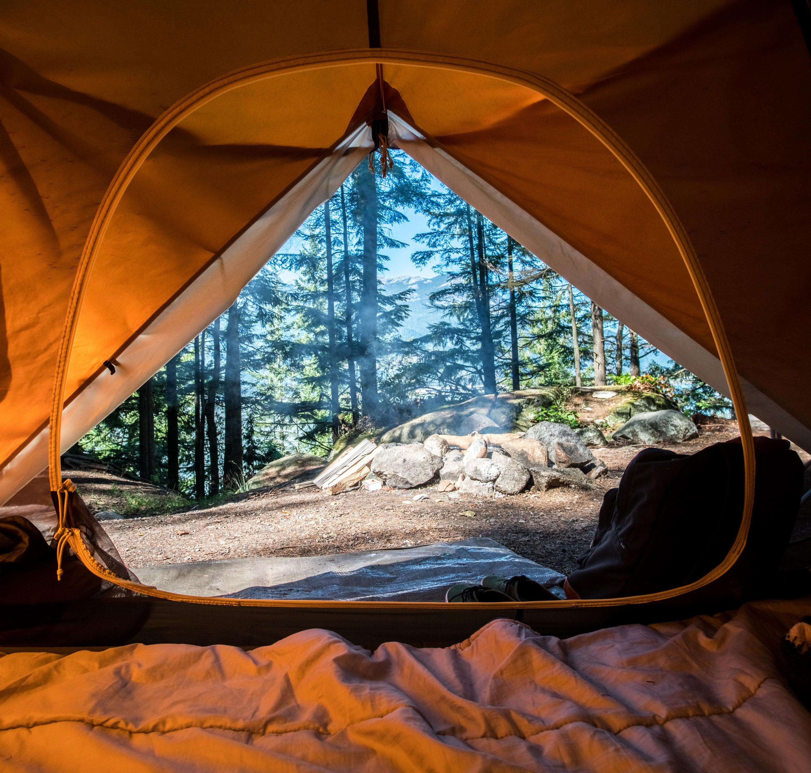
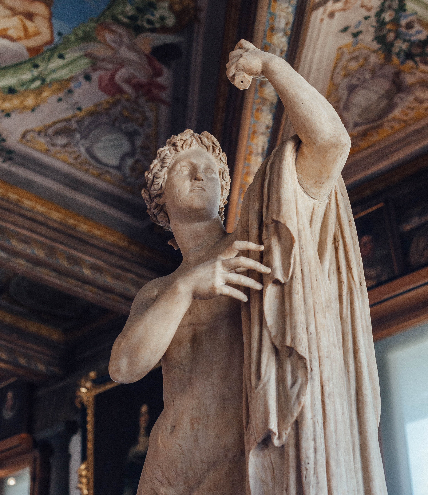

Outdoor activities
I grew up in Riva del Garda (a small village overlooking the lake and surrounded by mountains) and a strong connection to nature has always characterized my life. Water is my element but I also love hiking, trekking, camping, running, scuba-diving and sailing.
Good food=Good mood
I couldn't live without a tasty meal and a good glass of wine. I like these moments of conviviality to share memories with the people I love.

Art is life
I played violin for 6 years at the Conservatory of Trento and I was part of the BDA (Bureau des Arts). I love listening to classical music but I also enjoy visiting museums and art galleries.
